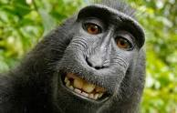

Science
Deux singes clonés sont nés en Chine

Deux singes clonés sont nés en Chine : une prouesse scientifique qui pose des questions éthiques
Deux jeunes macaques ont été créés grâce à un clonage utilisant la même technique que pour la brebis Dolly. Les
chercheurs chinois espèrent pourvoir les utiliser pour la recherche médicale.
Ils s’appellent Zhong Zhong et Hua Hua, ils ont respectivement huit et six semaines… Et ils sont « nés » d’un
clonage, à l’Institut des neurosciences de l’Académie chinoise des sciences (CAS), à Shanghaï. Ces deux macaques
crabiers ont été créés grâce à la méthode utilisée en 1996 pour la brebis Dolly, le premier mammifère cloné.
CLONAGE SOMATIQUE
Ils racontent leurs techniques dans un article publié dans la revue scientifique Cell. Il s’agit d’un clonage
par transfert nucléaire de cellules somatiques (SCNT) : on prélève d’abord une cellule contenant l’ADN sur un
macaque adulte. La cellule est implantée dans un ovocyte non fécondé, prélevé sur un autre macaque adulte. Le
noyau de cet ovocyte a été retiré, il a donc été débarrassé de ses informations génétiques.
Une fois le transfert effectué, le couple cellule-ovocyte est soumis à un très petit choc électrique, qui les
fusionne.L’embryon ainsi obtenu est transféré dans l’utérus de la mère porteuse. Le nouveau-né aura le même ADN
que le premier macaque adulte.
Ce n’est pas la première fois que des primates ont été clonés : en 1999 naissait le macaque réshus Tetra, créé
par une méthode plus limitée, la division de l’embryon. Mais le clonage somatique, qui est utilisé depuis Dolly
sur une vingtaine d’espèces animales, était plus compliqué avec les primates : c’est le premier succès de cette
méthode avec des singes. Les chercheurs ont réalisé le transfert très rapidement, et surtout ont prélevé, cette
fois-ci, la cellule contenant l’ADN dans le tissu fœtal. Ces cellules peuvent être cultivées dans un
laboratoires, ce qui permet plus de clonage.
DEUX RÉUSSITES SUR 79 EMBRYONS
Les scientifiques chinois ont travaillé pendant trois ans sur le clonage somatique avant que cela fonctionne, et
les deux bébés macaques sont pour l’instant en très bonne santé. Mais l’équipe de chercheurs a connu plusieurs
échecs avant de réussir : seules deux réussites… sur 79 embryons créés à partir d’une cellule du foetus. Ils ont
par ailleurs aussi tenté de cloner des singes à partir de cellules issues d’adultes : deux clones sont nés sur
181 embryons, et tous deux sont morts de difficultés respiratoires au bout de 30 heures.
L’expérience requiert donc de nombreux animaux : les scientifiques chinois ont utilisé des douzaines de mères
porteuses pour réaliser cette étude, chacune coûtant environ 50 000 dollars. Coûteuse, et complexe
techniquement, cette méthode de clonage est difficile à mettre en place. Mais les chercheurs chinois espèrent
tout de même que leur technique de clonage va pouvoir être réutilisée, d’abord pour étudier la structure
biologique des primates, mais aussi pour faire avancer la recherche médicale.
Ils ont en effet souligné dans leur étude les avantages d’avoir un groupe de singes génétiquement identiques.
Les primates non humains sont très utilisés dans la recherche médicale, pour étudier des maladies et tester des
médicaments. Mais les différences génétiques peuvent fausser les résultats… Différences qui n’existent pas lors
d’un clonage.
« En travaillant sur un petit groupe d’animaux génétiquement semblables, il est possible de tester beaucoup plus
rapidement de nouvelles molécules », a ainsi expliqué à l’AFP Mu-ming Poo, directeur de l’Institut des
neurosciences de la CAS. Pour lui, les laboratoires pourront également « tester l’efficacité de traitements
expérimentaux avant de mener des essais cliniques ».
LES LABORATOIRES POURRONT ÉGALEMENT TESTER L’EFFICACITÉ DE TRAITEMENTS EXPÉRIMENTAUX AVANT DE MENER DES ESSAIS
CLINIQUES
QUESTIONS ÉTHIQUES
On pourrait même aller plus loin : comme le rappelle The Verge, grâce aux techniques actuelles, notamment
l’éditeur de gènes CRISPR, il serait très facile de modifier l’ADN de ces singes clonés afin d’étudier les
effets des gènes dans des maladies comme Parkinson, Alzheimer ou Huntington.
Mais ce type de manipulation ne peut pas être envisagé sans considérations éthiques. Cette étude a déjà entraîné
la mort de nombreux êtres vivants avant d’obtenir deux macaques vivants. Et la création d’un « troupeau » de
macaques clonés pour que l’on puisse leur inculquer des maladies neurodégénératives pose des questions sérieuses
sur ce que l’on est prêt à faire vivre aux animaux au nom de la recherche scientifique.
Par ailleurs, les scientifiques chinois ont conscience que leurs travaux risquent de susciter de nouvelles
inquiétudes sur le clonage humain. « On peut, en principe, cloner des humains », a précisé Mu-ming Poo. « Je
pense que personne ne veut cloner des êtres humains, la société ne le permettrait pas » mais « une fois qu’une
nouvelle technique apparaît, le risque d’une mauvaise utilisation existe », a-t-il reconnu.
Retour Acceuil
SpaceX prévoit le premier décollage de la fusée Falcon Heavy pour le 6 février
Le vol inaugural du lanceur lourd Falcon Heavy, prévu initialement pour l'automne, se déroulera le mardi 6
février, annonce SpaceX. Fin janvier, l'entreprise américaine a effectué avec succès un test de mise à feu
statique.
Dans le domaine de l’astronautique, il faut parfois composer avec des impondérables. Elon Musk s’en est rendu
compte avec Falcon Heavy. Sa société spécialisée dans le vol spatial, SpaceX, devait initialement procéder au
vol inaugural de sa toute première fusée lourde au cours de l’automne 2017, en novembre. Mais le 1er décembre
est arrivé et aucun décollage n’a eu lieu.
En fin de compte, le grand jour aura lieu le mardi 6 février 2018. Dans un message publié samedi 27 janvier sur
Twitter, Elon Musk, le fondateur de SpaceX, a déclaré qu’un créneau a été trouvé à cette date pour faire
décoller le lanceur depuis le centre spatial Kennedy, en Floride. Trois jours avant, Elon Musk annonçait que le
test de mise à feu statique, préalable indispensable au vol, s’était bien passé.
CHANGEMENT DE CATÉGORIE
Si SpaceX maîtrise désormais correctement les vols intermédiaires, qui sont assurés par la fusée Falcon 9,
l’entrée dans la catégorie des lanceurs lourdes constituera un vrai défi pour l’entreprise américaine. Beaucoup
de paramètres de vol changent pour arracher une telle masse de la gravité terrestre. En outre, l’engin s’avère
bien plus complexe, notamment du fait du nombre accru de moteurs-fusées employés.
À dire vrai, la société envisage même un échec au cours du lancement.
C’est ce qu’a fait comprendre le patron de la compagnie l’été dernier en évoquant de « nombreux risques » : « il
est très probable que le véhicule n’arrive même pas en orbite. Je tiens juste à ce que [les attentes du public]
prennent [cet élément] en compte. J’espère qu’il ira assez loin du pas de tir pour ne pas l’abîmer. Honnêtement,
ce serait déjà une réussite ».
« IL EST TRÈS PROBABLE QUE LE VÉHICULE N’ARRIVE MÊME PAS EN ORBITE »
Capable de transporter une charge de presque 64 tonnes en orbite terrestre basse, le Falcon Heavy apparaît comme
une version bien plus musclée que le lanceur Falcon 9. Il s’agit, en simplifiant, d’une fusée classique à
laquelle on appose deux propulseurs latéraux. En orbite de transfert géostationnaire, le Falcon Heavy doit
pouvoir transporter une charge utile d’un peu moins de 27 tonnes.
Le lancement est capital pour SpaceX puisque le lanceur est censé lui permettre, en 2018, de propulser deux
touristes astronautes vers la Lune. Pour cette mission, le Falcon Heavy embarquera une capsule Dragon 2.
Aujourd’hui, celle-ci, dans sa version de base, est employée dans les opérations de ravitaillement de la station
spatiale internationale.
C’est aussi un cap symbolique car il s’agira aussi de l’emploi de la fusée américaine la plus puissante depuis
celle du Saturn V de la Nasa, en 1973. On peut dès lors comprendre la prudence avec laquelle SpaceX avance sur
ce dossier, même si cela nécessite des réajustements de calendrier.Retour Acceuil
Facebook fait appel à un autre Français pour diriger ses travaux en intelligence artificielle
Facebook réorganise son pôle consacré à l'intelligence artificielle : Yann LeCun, qui est devenu le visage de
l'IA chez le réseau social, ne s'occupera plus du management afin de se concentrer sur la recherche. Ses
précédentes attributions sont confiées à un autre Français, recruté pour l'occasion.
Il est le « Monsieur IA » chez Facebook : Yann LeCun, qui n’hésite pas à prendre la parole quand l’actualité sur
l’intelligence artificielle prend une direction qui lui déplaît (« les scénarios à la Terminator n’existent pas
», lançait-il cet automne, avant de s’en prendre au au robot Sophia, une simple marionnette dénuée d’émotions)
ou pour relativiser ce que fait la concurrence (comme les avancées obtenues par Google avec AlphaGo), voit ses
attributions changer.
Dorénavant, Yann LeCun se focalisera sur la recherche. C’est ce que l’intéressé a annoncé dans une publication
sur Facebook mardi 23 janvier : ses fonctions couvrent désormais la direction scientifique et de la stratégie du
groupe dans le domaine de l’IA. Quant à ses précédentes fonctions ayant trait à l’opérationnel, elles sont
confiées à Jérôme Pesenti, dont le recrutement a été officialisé par Yann LeCun.
« Jérôme a rejoint le groupe en tant que vice-président en charge de l’intelligence artificielle, ce qui reflète
l’importance croissante de l’IA chez Facebook. Il supervisera les activités de recherche et développement de
Facebook dans le domaine de l’IA, en gérant à la fois les programmes FAIR (Facebook AI Research) et AML (Applied
Machine Learning) », explique-t-il.
DES FRANÇAIS CHEZ FACEBOOK
Il est intéressant de constater que ce champ de recherche éminemment stratégique chez Facebook — comme chez bon
nombre d’entreprises américaines et étrangères — est sous la direction de deux Français. Ce n’est sans doute pas
un hasard, la France ayant la chance, selon Cédric Villani, en charge d’une mission sur l’intelligence
artificielle, une structure qui favorise l’émergence de talents.
« Nous disposons d’une très belle école de recherche théorique, en mathématique, en informatique et en
algorithmique. Nous avons de beaux organismes, comme le CNRS, le CEA et l’INRIA, chacun jouant une très belle
partition dans son style », faisait-il remarquer mi-janvier dans un entretien au Figaro. Partition qui n’est pas
tombée dans l’oreille d’un sourd, notamment à l’étranger.
En effet, Yann Le Cun et Jérôme Pesenti ne sont pas les seuls compatriotes à travailler sur ce sujet. Le réseau
social a par le passé recruté plusieurs concitoyens : en 2015, deux ans après l’embauche de Yann LeCun, trois
Français ont été recrutés. Toutefois, l’arrivée de Jérôme Pesenti constitue une belle prise pour Facebook car
l’intéressé a notamment été le vice-président de la technologie d’IBM Watson.
Jérôme Pesenti a d’abord suivi un cursus en France, avec l’obtention d’un diplôme d’études approfondies en
sciences cognitives à l’université Pierre-et-Marie-Curie puis un doctorat de mathématiques à l’université
Paris-Sud. Il s’est ensuite envolé vers les USA pour rejoindre le laboratoire informatique de l’université de
Carnegie-Mellon pour continuer ses recherches.
WELCOME TO FACEBOOK JEROME PESENTI!JÉRÔME IS JOINING AS VP OF AI, REFLECTING THE GROWING IMPORTANCE OF AI AT…
PUBLIÉ PAR YANN LECUN SUR MARDI 23 JANVIER 2018
C’est en 2000 que sa carrière professionnelle démarre véritablement, avec la création avec d’autres étudiants de
Vivisimo, une entreprise spécialisée dans l’analyse de texte. Elle est achetée en 2012 par IBM, ce qui lui
permet d’intégrer une grande entreprise en tant que scientifique en chef. C’est à ce moment-là qu’il prend en
charge le développement de l’IA d’IBM, Watson, sur laquelle travaillent 300 ingénieurs.
Son départ d’IBM survient en septembre 2016. Il passe alors chez BenevolentTech, une filiale high-tech de la
société britannique Benevolent AI, dont la mission est d’analyser les publications scientifiques grâce à
l’apprentissage profond (deep learning). Il y restera un temps. Désormais, c’est pour Facebook que Jérôme
Pesenti va déployer son expérience et son savoir-faire.Retour Acceuil